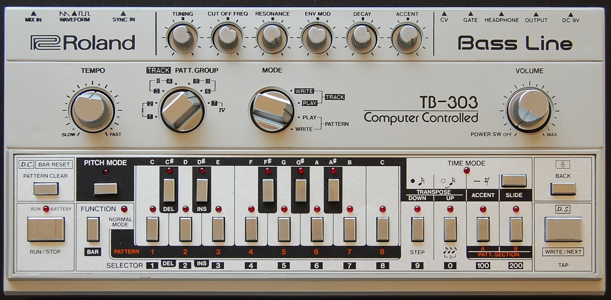
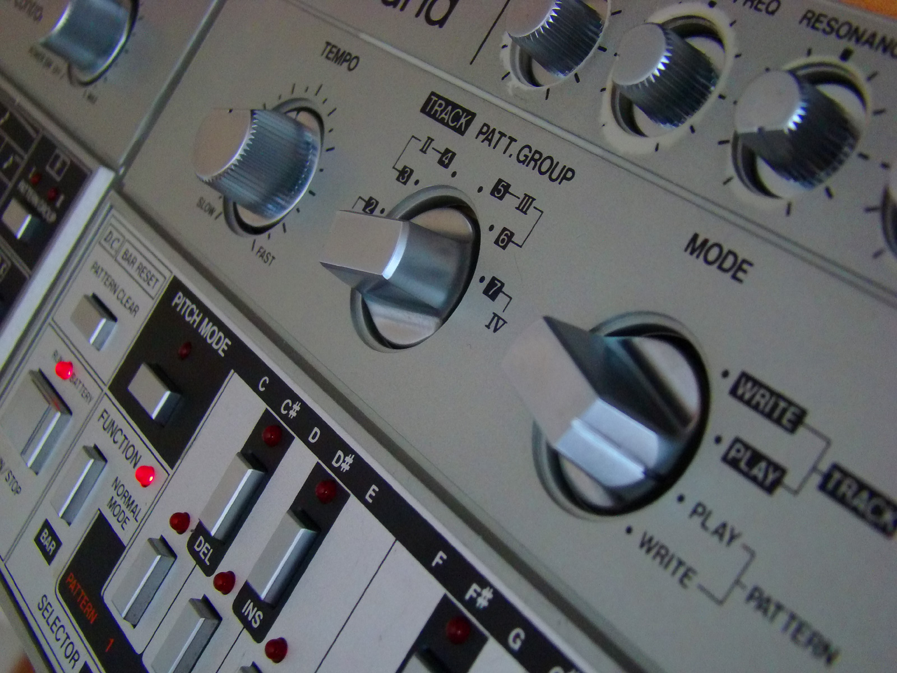
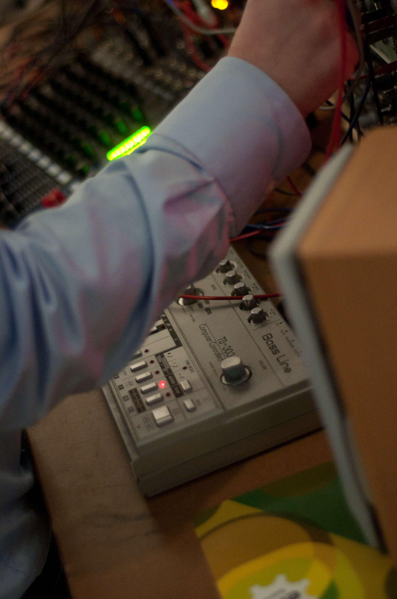

Roland TB-303 Bass Line
The bass machine with no display that programmed in two blind passes — and accidentally invented acid house

Overview
The Roland TB-303 Bass Line is a bass synthesizer released by Roland Corporation in 1981 and discontinued in 1984. Designed by Tadao Kikumoto — who also designed the TR-909 and led the TR-808 team — it was marketed as a 'computerised bass machine' meant to replace the bass guitarist in a band. It failed completely at that job, selling poorly at US$395 (UK £234), and Roland shipped it in the US without an English-language manual. It is remembered instead as the machine whose interface birthed acid house.
The TB-303 has no display at all — no screen, no readout of what is programmed. Notes are entered in two separate passes over the same 16 multi-purpose keys: a pitch pass that taps out the melodic order without regard to timing, then a time pass that walks step by step through the measure setting three switches per step (start sound / continue sound / no sound), plus per-step accent and slide buttons and a large mode knob. An April 1982 review in Electronics & Music Maker told readers they 'really have to write things down at an early stage,' and described losing programs and swearing as part of the process.
The cheap second-hand units that survived became instruments of discovery. Chicago's Phuture twisted the five tone knobs while a pattern looped and recorded 'Acid Tracks' (1987), the first acid house record. Charanjit Singh's Synthesizing: Ten Ragas to a Disco Beat (1982, recorded on a 303 and an 808) is the recognized precursor. Orange Juice's 'Rip It Up' (1983) took the 303 into the UK top ten. The Guardian named its release one of the 50 key events in the history of dance music.
Deep dive
The 303's sequencer is the strangest input model in the collection's music section: you program a bassline twice. First a pitch pass — press the pitch-mode button and tap the keys in melodic order, not caring about timing. Then a time pass — step through the memorized measure and set each step's switch to start, continue, or silence. There is no display anywhere on the machine; the pattern lives in your head, on paper, or not at all. In Chicago, where the manual was missing entirely, kids programmed by looping a pattern and turning the cutoff, resonance, envelope-mod, decay, and accent knobs live — which is exactly how 'Acid Tracks' was made.
Roland sold the 303 to bassists; it sounded nothing like a bass guitar and was discontinued in 1984. Second-hand units fell to around $50 and were picked up by musicians who had no interest in what it was supposed to do. The machine's design ambition — a computerised bass player — was inverted by its users into a lead instrument defined by its artificiality: the squelch of the 24 dB/octave resonant filter.
The 303 and the 808 were released a year apart and are often heard together (Charanjit Singh's 1982 Ten Ragas, Phuture's Acid Tracks). Their interfaces are deliberate opposites: the 808 is a legible grid of 16 steps with an LED showing where you are; the 303 is the same grid concept with zero feedback. Each failure of legibility — and each triumph of it — produced a genre. Together they bracket the step-sequencer paradigm the museum previously only touched in passing via the Casio VL-1's toy 100-note sequencer.
Team & pioneers
- Roland Corporation. Manufacturer of the TB-303 (1981–1984); founded by Ikutaro Kakehashi
- Tadao Kikumoto. Chief engineer and designer of the TB-303; also designed the TR-909 and led the TR-808 team
- Phuture (Chicago). House trio whose looping-knob-tweaking on a cheap 303 produced Acid Tracks (1987), founding acid house
- Charanjit Singh. Indian musician whose 1982 album Synthesizing: Ten Ragas to a Disco Beat anticipated acid house on a 303 and an 808
Media


Sources
- Wikipedia — Roland TB-303
- Electronics & Music Maker, April 1982 — TB-303 review (programming ritual)
- Vintage Synth Explorer — Roland TB-303
- Attack Magazine — Roland TB-303: not a real bass guitar
- The Guardian — Tadao Kikumoto invents the Roland TB-303 (50 key events in dance music)
- Wikimedia Commons images (CC0, public domain, CC BY 2.0)